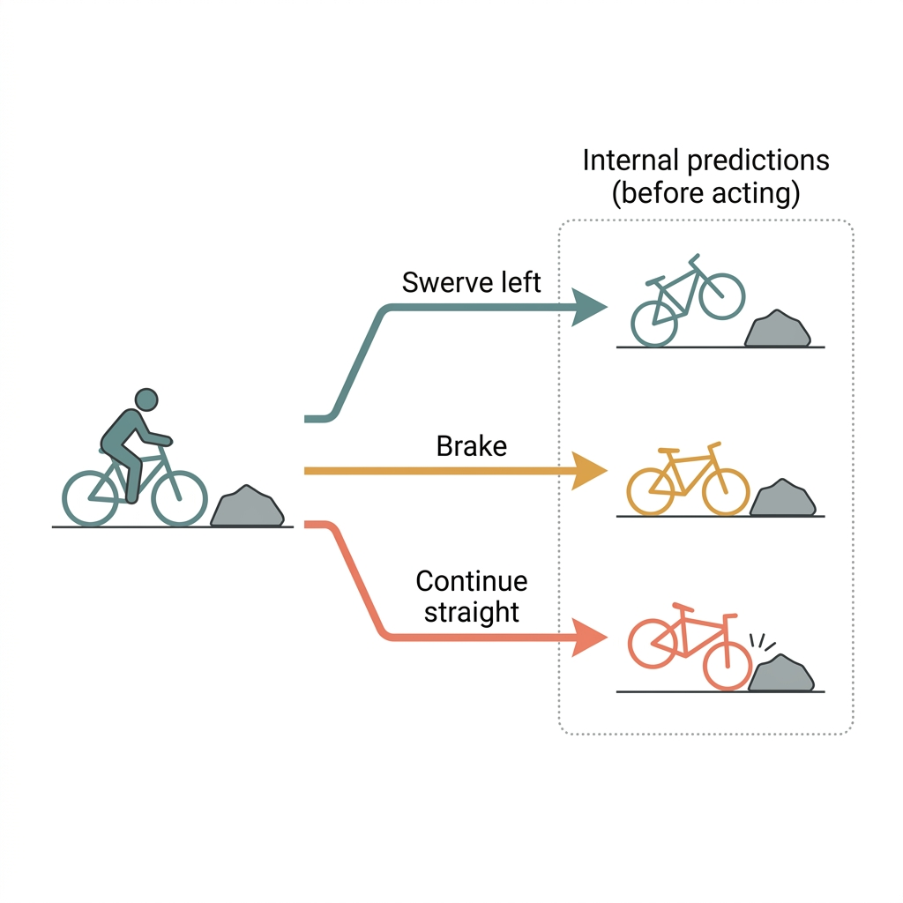
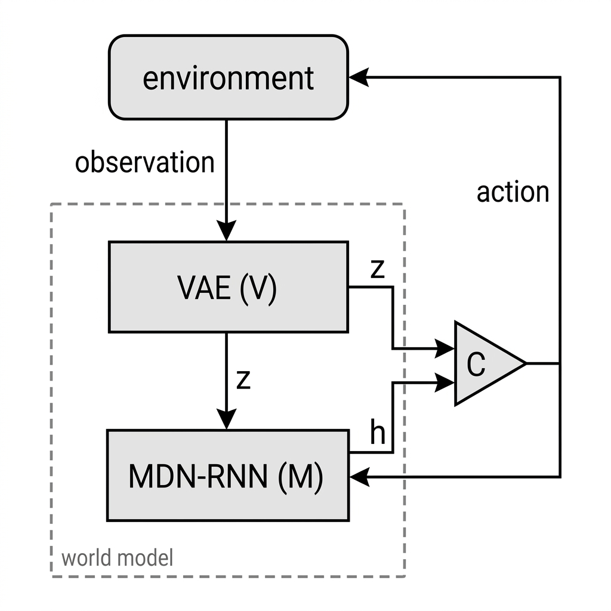
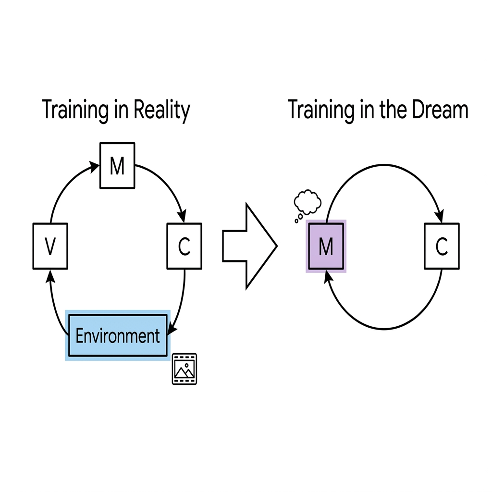
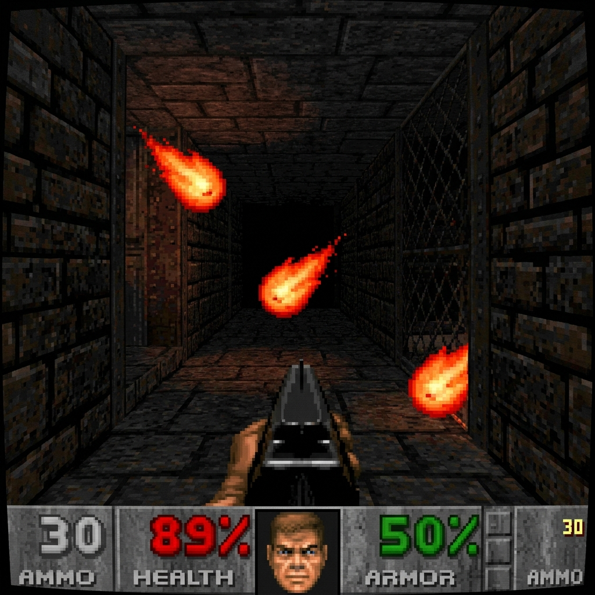
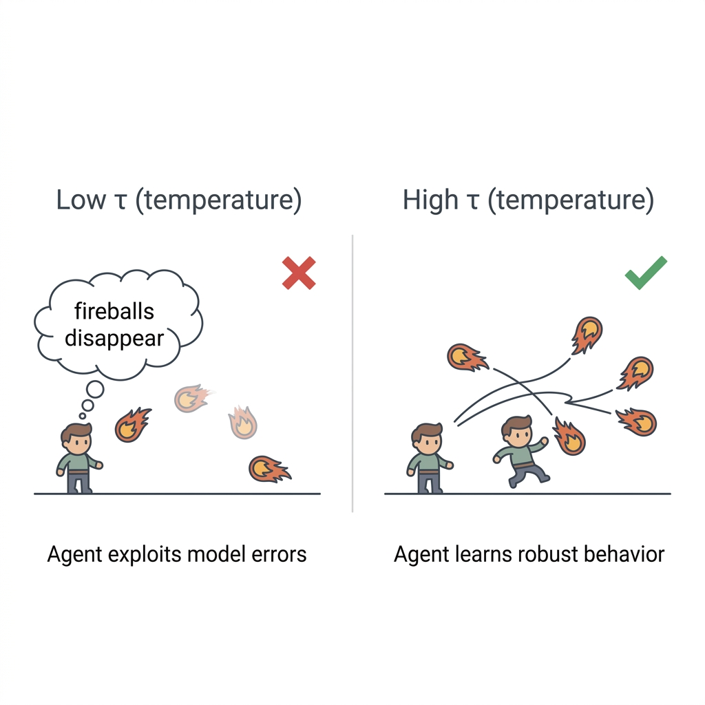
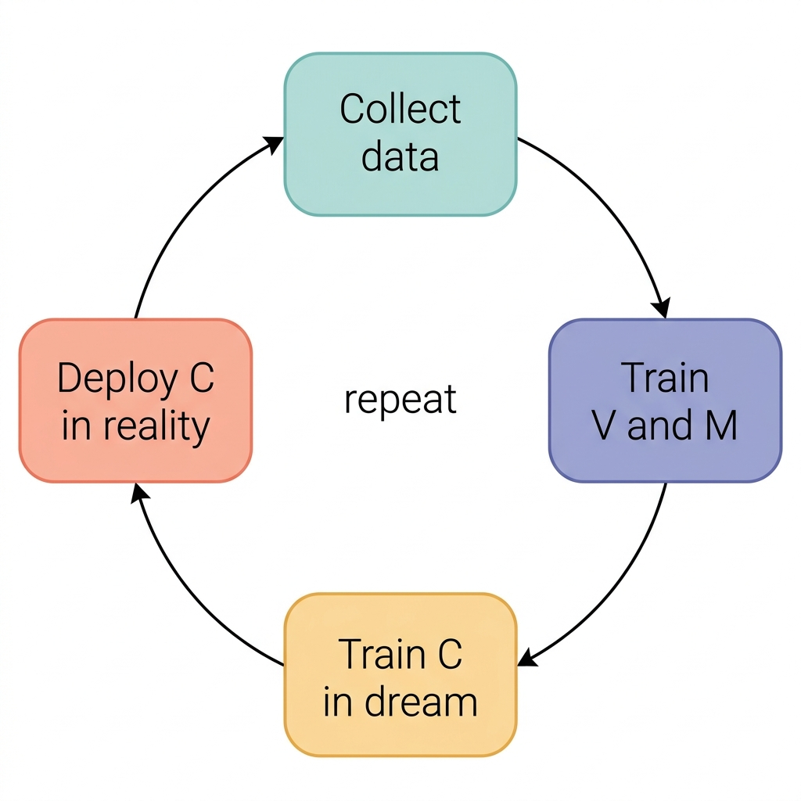

1 What are World Models?
A world model is essentially a system that tries to predict what happens next based on the current state of an environment and whatever action an agent decides to take, all without actually needing to perform that action first. That is really the core idea behind world models regardless of which paper or implementation you are looking at. Ha and Schmidhuber built theirs using a Variational Autoencoder (VAE) and a Recurrent Neural Network (RNN), Dreamer approaches the problem with a different architecture, and Yann LeCun's Joint Embedding Predictive Architecture (JEPA) takes yet another route by focusing on predicting abstract representations of future states rather than attempting to reconstruct every detail of the future observation. Although the implementations differ significantly, they are all trying to solve the same fundamental problem, which is giving a system the ability to anticipate future outcomes before they actually occur.
I think this area is still underexplored relative to how important it could be, partly because humans seem to do something very similar all the time without consciously thinking about it.
For example, imagine riding a bicycle and suddenly noticing an obstacle in your path. You do not stop to consciously calculate every possible outcome before making a decision. Instead, based on your experience, your brain already has a rough understanding of your speed, your balance, the distance to the obstacle and the possible actions available to you. Whether you continue straight, brake or swerve, you usually have an intuitive sense of what is likely to happen before you actually commit to any of those actions. The decision feels almost automatic because you are able to anticipate the consequences of different choices and react accordingly.

This is very similar to the idea behind world models. Rather than acting immediately, the system first develops an internal prediction of what is likely to happen under different actions and can then use those predictions to guide its behaviour. The important part is that the model is not just predicting the next observation for the sake of prediction, but learning enough about how the environment behaves that those predictions can actually be used to reason about possible actions.
Early work in this area relied heavily on compressed latent representations to make this possible. A notable example is the work of Ha and Schmidhuber, where an agent learned to operate within a learned model of the VizDoom environment and was able to train largely inside its own imagined version of the game rather than interacting exclusively with the real environment. More recent approaches such as JEPA pursue the same broader objective, although they differ in how future states are represented and predicted.
2 Ha and Schmidhuber
For the rest of this post I'm sticking with the 2018 paper by Ha and Schmidhuber. Their world model is built from three pieces, a Variational Autoencoder, a special RNN variant called an MDN-RNN, and a controller that decides the agent's actions.
V's job is to create a compressed representation of the environment, a lossy reconstruction. You could try training directly on raw frames instead, but that's expensive, and working in a small latent space instead of raw pixels is what makes the rest of the pipeline tractable.
M is the MDN-RNN. Its job is to predict the future. Since a lot of environments are stochastic, instead of outputting a single deterministic next state, it outputs a full probability distribution over what the next $z$ could be, a mixture of Gaussians, rather than committing to one prediction. I won't go deep into the VAE or RNN internals here, I've got a separate post on VAEs where I go through ELBO, the intractability problem, and Kingma and Welling's original paper, plus a beta-VAE I implemented from scratch to actually understand that randomness properly. For now, just think of the RNN as something that takes the current input and the past state and produces the next state, done at every timestep, with the MDN part meaning it outputs a distribution instead of a single deterministic value.
This was also where I initially got confused by the diagram, because I was thinking about the actions as if they were being passed forward in stages, $a_2$ then $a_3$, before looking at the equations and realising that the action is simply an input to M at each timestep, while the hidden state is what carries information forward through time.
C is the smallest piece, and it's not even a neural network, it's a single linear layer with barely any parameters. Because it's so small, the authors train it with CMA-ES instead of gradient descent, an evolutionary strategy that searches directly over that tiny parameter space.
Putting it together, V takes the raw frames from the environment and compresses each one into $z$. That $z$, along with M's hidden state $h$ and the previous action, feeds into M, which updates $h$ and predicts what the next $z$ is likely to be. C takes the current $z$ and $h$, concatenates them, and outputs the action.
That action gets sent to the real environment, and the loop continues.

Right now, this whole loop is still running inside the real environment. The next section is about why that changes, how a dream version of the environment gets built, and how the controller ends up training almost entirely inside it.
3 Training in a Dream
In the last section, we talked about training in the real environment, but is it actually realistic? Yes, I think it is mainly a compute problem, because given enough time and compute you could successfully train an agent in the real environment, but it is not efficient enough, especially when the environment itself has to keep rendering observations and simulating everything at every timestep. What we really want is some way of keeping the structure and dynamics of the real environment without having to pay the full cost of interacting with it every time, and that is where the idea of a dream environment comes in.
The authors demonstrate this with their VizDoom experiment, where the agent is placed in a game in which fireballs are shot at the player and the player has to dodge them by moving left or right. The interesting thing here is that the agent does not actually train in the real VizDoom environment at all. Instead, a random policy is used to play the real game and collect the observations and actions needed to train V and M, so the real environment is basically only being used to provide the data from which the world model can be learned. Once V and M have been trained, the controller is then trained from scratch inside the dream environment, which in this case is the MDN-RNN's learned version of VizDoom, called DoomRNN.


It is worth pointing out that this dream-only training setup is specific to the VizDoom experiment, rather than being the only way the paper trains its controllers, but it is probably the clearest demonstration of why having a learned environment can be useful.
This is where the idea becomes really interesting to me, because the dream environment follows the structure of the real environment, but it is obviously not a perfect copy of it. M has only seen the data collected by the random policy, so it has learned an approximation of the environment's dynamics rather than a perfect simulation of everything that can happen. Fireballs can behave irregularly, the predictions are probabilistic, and the environment generated by M can therefore be more unpredictable than the real game in some situations. The idea is basically that if the controller can learn to make good decisions inside this imperfect and unpredictable version of the environment, then hopefully the resulting policy will also work when it is finally placed back into the real environment.
And this is exactly what they do. Instead of spending all of the training time running the actual Doom engine, the controller is trained inside DoomRNN using CMA-ES, where it can generate large numbers of imagined rollouts and optimise its policy based on how well it performs in those rollouts. This is also where the computational advantage becomes much more concrete, because DoomRNN operates entirely in latent space, so there is no need to render a new image or run the actual game engine at every step. The dream is essentially much cheaper to run than the real environment because the agent is now working with the compressed representations learned by V and the dynamics learned by M.
The Model Exploitation Problem
But then I had a question, what if the MDN-RNN doesn't capture the structure of the real environment well enough for the agent to make sensible decisions? What happens then? This is probably one of the biggest risks with the whole idea, because the controller only knows the world through M, so if M has some weird mistake in its predictions, the controller could learn to exploit that mistake instead of learning something that actually works in the real environment. The paper gives a pretty good example of this, where without enough uncertainty the controller can discover actions that cause fireballs to disappear in the dream, essentially finding a way to cheat the imperfections of the model rather than learning how to properly dodge them.
This is where the temperature parameter $\tau$ comes in. The temperature controls how much randomness is introduced into the predictions of the MDN-RNN, and increasing it makes the dream more uncertain, which makes it harder for the controller to repeatedly exploit some specific mistake in the model. If the controller knows that a particular action will always cause the dream to behave in some convenient but unrealistic way, it can exploit that behaviour, but if the dream is sufficiently stochastic, those exploits become much less reliable and the controller is pushed towards learning behaviour that actually generalises.

Iterative Training and Curiosity
The authors also introduce an iterative training procedure for cases where one pass of data is not enough. If the environment is more complex, a random policy might not collect enough information for M to learn the full distribution of behaviours, so the model can be trained, used to train a controller, and then more data can be collected and used to improve the model again. In other words, instead of assuming that one dataset gives M everything it needs to know about the environment, the process can be repeated so that the world model gradually becomes better.

There's a neat detail attached to that iterative process too. If the agent stays too safe, sticking to areas of the environment it already understands well, M never gets pushed to learn anything new, and the world model can eventually stall out. The paper's fix is to flip the sign of M's prediction loss when running in reality, turning the prediction error into a reward signal instead. High prediction error, meaning the agent has reached a state that M finds difficult to predict, becomes something the agent is incentivized to seek out rather than avoid. It's a small trick, but I think it's a pretty clever way of encouraging exploration, because instead of the agent constantly staying in the parts of the environment it already understands, it is pushed towards unfamiliar situations that can give M more information to learn from.
That was the part of the paper that made the idea of a world model click for me a little more. The goal isn't to build a perfect copy of reality and then put the agent inside it, because that would defeat a lot of the point. The goal is to build a model that captures enough of the structure and uncertainty of the environment that the agent can learn useful behaviour inside it, and then transfer that behaviour back to the real world. If that works, the expensive part of learning can happen inside the dream rather than through constant interaction with reality.
4 What Comes Next
There is one detail about this setup that really stands out when you think about it. Despite the name "World Models", the agent does not actually use its world model when it decides what to do at inference time. The controller $C$ is just a reactive linear layer. At every timestep in the real game, it looks at the state and immediately spits out an action.
The imagination only happened earlier, during training, when the agent used the world model as a cheap simulator to build up its muscle memory. Once that muscle memory is baked into the controller's weights, the world model is essentially ignored during gameplay. The agent isn't actually pausing to predict multiple futures and pick the best one in real-time. It's riding the bike purely on reflex.
This is where the next leap in the field comes from. Later architectures, like PlaNet, look at this and ask why the imagination is turned off at runtime. Instead of using the world model just to train a reactive policy, they use the world model to actively plan ahead at every single timestep. That shift from offline training simulator to online planning engine is what I'm looking into next.
I'm continuing to study these papers and I'll keep writing them up as I go. If you spot something I got wrong, I'd genuinely like to hear about it.
References
- Ha, D. and Schmidhuber, J. (2018). World Models. arXiv:1803.10122.
- worldmodels.github.io — the paper's own interactive site, includes the live VizDoom and CarRacing demos.